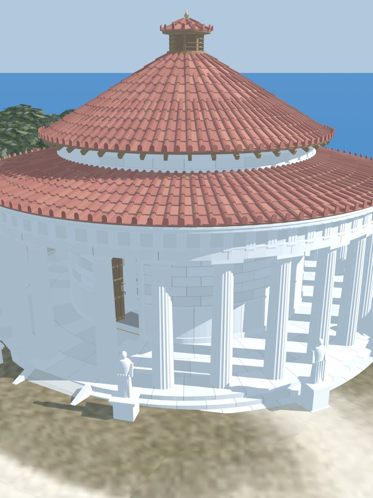
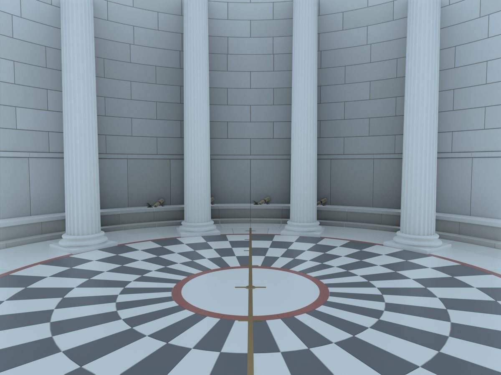
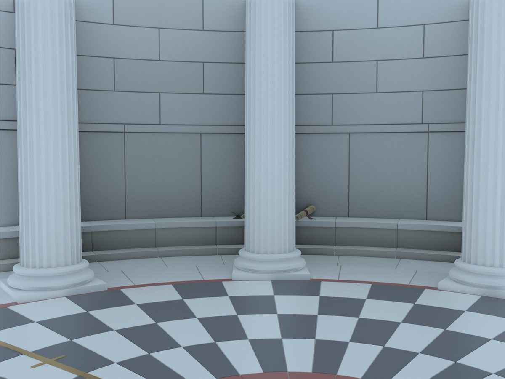

How can a group of machines agree on a sequence of commands when any of them may wander off at any time, and no one is in charge for long?
Lamport answered this himself, with the part-time legislators of the Greek island of Paxos. We present his paper as he wrote it, with interactive figures. It is the paper that inspired this entire project. Lamport ends it with the parliament's fall; the other books set that aside, and in them the parliament is still sitting.
After Leslie Lamport, The Part-Time Parliament, 1998 · Leslie Lamport, Paxos Made Simple, 2001

A group of computers must keep the same log of commands, in the same order.
Lamport told it as the story of an ancient island parliament. So will we.
Commands arrive. Every machine writes them in the same order.
One conical roof. One door, and legislators come and go through it as they please.
Each legislator writes passed decrees into their own scroll, in order. Two things must hold.
A scroll may lack an entry it hasn't heard of. It may never hold a different one.
Leaving every scroll blank would be consistent too. So: if a majority stays in the Chamber long enough, any proposed decree is passed and written down.
Both are hard when anyone may vanish mid-vote. Trading the first for the second is easy. Keeping both is the whole game.
Everyone on the island is honest. The danger is not lies. It is absence.
A legislator who leaves may forget what they were doing. Key notes go in the back of the scroll, in indelible ink. A slip of paper may be lost.

A messenger never garbles a message. But they may forget they delivered it, and deliver it again. Or set off on a long voyage and never arrive.
While in the Chamber, everyone acts promptly. Outside it, anything takes any amount of time.
Whatever the protocol does, it must be right under all three.
That shared member remembers what the first majority decided, even when everyone else has wandered off.
Seven legislators, seen from above the Chamber. Click anyone to send them out the door or call them back. Then see what the overlap does.
The Paxons began with a Synod of five priests choosing a single symbolic decree. They did it with ballots.
A ballot is a vote on one decree by a chosen group, its quorum. It succeeds if every member of the quorum votes for it. Three rules keep ballots safe.
No two ballots are ever confused, and they have a clear order.
The same overlap as before, so a decision is never wholly forgotten.
If anyone in a ballot's quorum has voted before, the ballot must carry the decree of the latest of those votes.
Five ballots among five priests. A boxed priest is one who voted. Which ballots had to copy an earlier decree, and from whom?
| Ballot | Decree | Quorum |
|---|
Each ballot B has a number Bbal, a decree Bdec, a quorum Bqrm and a set of voters Bvot, and ℬ is a set of ballots. The three rules are the conditions B1(ℬ), B2(ℬ) and B3(ℬ). A ballot is successful when Bqrm ⊆ Bvot.
To state B1(ℬ)–B3(ℬ) formally requires some more notation. A vote v was defined to be a quantity consisting of three components: a priest vpst, a ballot number vbal, and a decree vdec. It represents a vote cast by priest vpst for decree vdec in ballot number vbal. The Paxons also defined null votes to be votes v with vbal = −∞ and vdec = blank, where −∞ < b < ∞ for any ballot number b, and blank is not a decree. For any priest p, they defined nullp to be the unique null vote v with vpst = p.
Paxon mathematicians defined a total ordering on the set of all votes, but part of the manuscript containing the definition has been lost. The remaining fragment indicates that, for any votes v and v′, if vbal < v′bal then v < v′. It is not known how the relative order of v and v′ was defined if vbal = v′bal.
For any set ℬ of ballots, the set Votes(ℬ) of votes in ℬ was defined to consist of all votes v such that vpst ∈ Bvot, vbal = Bbal, and vdec = Bdec for some B ∈ ℬ. If p is a priest and b is either a ballot number or ±∞, then MaxVote(b, p, ℬ) was defined to be the largest vote v in Votes(ℬ) cast by p with vbal < b, or to be nullp if there was no such vote. Since nullp is smaller than any real vote cast by p, this means that MaxVote(b, p, ℬ) is the largest vote in the set
For any nonempty set Q of priests, MaxVote(b, Q, ℬ) was defined to equal the maximum of all votes MaxVote(b, p, ℬ) with p in Q.
Conditions B1(ℬ)–B3(ℬ) are stated formally as follows.8
Although the definition of MaxVote depends upon the ordering of votes, B1(ℬ) implies that MaxVote(b, Q, ℬ)dec is independent of how votes with equal ballot numbers were ordered.
8. I use the Paxon mathematical symbol ≜, which meant equals by definition.
To show that these conditions imply consistency, the Paxons first showed that B1(ℬ)–B3(ℬ) imply that, if a ballot B in ℬ is successful, then any later ballot in ℬ is for the same decree as B.
If B1(ℬ), B2(ℬ), and B3(ℬ) hold, then
for any B, B′ in ℬ.
For any ballot B in ℬ, let Ψ(B, ℬ) be the set of ballots in ℬ later than B for a decree different from B’s:
To prove the lemma, it suffices to show that if Bqrm ⊆ Bvot then Ψ(B, ℬ) is empty. The Paxons gave a proof by contradiction. They assumed the existence of a B with Bqrm ⊆ Bvot and Ψ(B, ℬ) ≠ ∅, and obtained a contradiction as follows.9
End Proof of Lemma
9. Paxon mathematicians always provided careful, structured proofs of important theorems. They were not as sophisticated as modern mathematicians, who can omit many details and write paragraph-style proofs without ever making a mistake.
With this lemma, it was easy to show that, if B1–B3 hold, then any two successful ballots are for the same decree.
If B1(ℬ), B2(ℬ), and B3(ℬ) hold, then
for any B, B′ in ℬ.
If B′bal = Bbal, then B1(ℬ) implies B′ = B. If B′bal ≠ Bbal, then the theorem follows immediately from the lemma. End Proof of Theorem
The Paxons then proved a theorem asserting that if there are enough priests in the Chamber, then it is possible to conduct a successful ballot while preserving B1–B3. Although this does not guarantee progress, it at least shows that a balloting protocol based on B1–B3 will not deadlock.
Let b be a ballot number and Q a set of priests such that b > Bbal and Q ∩ Bqrm ≠ ∅ for all B ∈ ℬ. If B1(ℬ), B2(ℬ), and B3(ℬ) hold, then there is a ballot B′ with B′bal = b and B′qrm = B′vot = Q such that B1(ℬ ∪ {B′}), B2(ℬ ∪ {B′}), and B3(ℬ ∪ {B′}) hold.
Condition B1(ℬ ∪ {B′}) follows from B1(ℬ), the choice of B′bal, and the assumption about b. Condition B2(ℬ ∪ {B′}) follows from B2(ℬ), the choice of B′qrm, and the assumption about Q. If MaxVote(b, Q, ℬ)bal = −∞ then let B′dec be any decree, else let it equal MaxVote(b, Q, ℬ)dec. Condition B3(ℬ ∪ {B′}) then follows from B3(ℬ). End Proof of Theorem
A priest runs a ballot. Scroll slowly: the picture moves with you.
The initiator, A, picks ballot 27 and a quorum of three: A, Γ and Δ. B and E sit this one out.
“Tell me the latest vote you ever cast, and promise never to vote in any ballot numbered below this one.”
The promise goes in the back of their scroll, in indelible ink. The reply is the latest vote, or none.
Γ voted in ballot 5, Δ in ballot 2, A never. The latest is ballot 5, so A must propose its decree: β. Only if nobody had ever voted could A choose freely.
A sends the forced decree to the quorum.
Each member votes, writes it in the back of their scroll, and reports back.
A writes the decree in their scroll and tells everyone. Anyone who hears writes it down. A decree, once chosen, is passed forward. That is the whole ballot.
The one-ballot protocol above, stated as the actions a priest may take, with the invariant those actions maintain and its proof.
The Synod’s basic protocol, described informally above, is stated here using modern algorithmic notation. We begin with the variables that a priest p must maintain. First come the variables that represent information kept in his ledger. (For convenience, a priest's previous vote is kept as its two components prevBal[p] and prevDec[p].)
outcome[p] — The decree written in p’s ledger, or blank if there is nothing written there yet.
lastTried[p] — The number of the last ballot that p tried to begin, or −∞ if there was none.
prevBal[p] — The number of the last ballot in which p voted, or −∞ if he never voted.
prevDec[p] — The decree for which p last voted, or blank if p never voted.
nextBal[p] — The number of the last ballot in which p agreed to participate, or −∞ if he has never agreed to participate in a ballot.
Next come variables representing information that priest p could keep on a slip of paper:
status[p] — One of the following values:
idle — Not conducting or trying to begin a ballot
trying — Trying to begin ballot number lastTried[p]
polling — Now conducting ballot number lastTried[p]
If p has lost his slip of paper, then status[p] is assumed to equal idle and the values of the following four variables are irrelevant.
prevVotes[p] — The set of votes received in LastVote messages for the current ballot (the one with ballot number lastTried[p]).
quorum[p] — If status[p] = polling, then the set of priests forming the quorum of the current ballot; otherwise, meaningless.
voters[p] — If status[p] = polling, then the set of quorum members from whom p has received Voted messages in the current ballot; otherwise, meaningless.
decree[p] — If status[p] = polling, then the decree of the current ballot; otherwise, meaningless.
There is also the history variable ℬ, which is the set of ballots that have been started and their progress—namely, which priests have cast votes. (A history variable is one used in the development and proof of an algorithm, but not actually implemented.)
Next come the actions that priest p may take. These actions are assumed to be atomic, meaning that once an action is begun, it must be completed before priest p begins any other action. An action is described by an enabling condition and a list of effects. The enabling condition describes when the action can be performed; actions that receive a message are enabled whenever a messenger has arrived with the appropriate message. The list of effects describes how the action changes the algorithm’s variables and what message, if any, it sends. (Each individual action sends at most one message.)
Recall that ballot numbers were partitioned among the priests. For any ballot number b, the Paxons defined owner(b) to be the priest who was allowed to use that ballot number.
The actions in the basic protocol are allowed actions; the protocol does not require that a priest ever do anything. No attempt at efficiency has been made; the actions allow p to do silly things, such as sending another BeginBallot message to a priest from whom he has already received a LastVote message.
Try New Ballot
Always enabled.
– Set lastTried[p] to any ballot number b, greater than its previous value, such that owner(b) = p.
– Set status[p] to trying.
– Set prevVotes[p] to ∅.
Send NextBallot Message
Enabled whenever status[p] = trying.
– Send a NextBallot(lastTried[p]) message to any priest.
Receive NextBallot(b) Message
If b ≥ nextBal[p] then
– Set nextBal[p] to b.
Send LastVote Message
Enabled whenever nextBal[p] > prevBal[p].
– Send a LastVote(nextBal[p], v) message to priest owner(nextBal[p]), where vpst = p, vbal = prevBal[p], and vdec = prevDec[p].
Receive LastVote(b, v) Message
If b = lastTried[p] and status[p] = trying, then
– Set prevVotes[p] to the union of its original value and {v}.
Start Polling Majority Set Q
Enabled when status[p] = trying and Q ⊆ {vpst : v ∈ prevVotes[p]}, where Q is a majority set.
– Set status[p] to polling.
– Set quorum[p] to Q.
– Set voters[p] to ∅.
– Set decree[p] to a decree d chosen as follows: Let v be the maximum element of prevVotes[p]. If vbal ≠ −∞ then d = vdec, else d can equal any decree.
– Set ℬ to the union of its former value and {B}, where Bdec = d, Bqrm = Q, Bvot = ∅, and Bbal = lastTried[p].
Send BeginBallot Message
Enabled when status[p] = polling.
– Send a BeginBallot(lastTried[p], decree[p]) message to any priest in quorum[p].
Receive BeginBallot(b, d) Message
If b = nextBal[p] > prevBal[p] then
– Set prevBal[p] to b.
– Set prevDec[p] to d.
– If there is a ballot B in ℬ with Bbal = b [there will be], then choose any such B [there will be only one] and let the new value of ℬ be obtained from its old value by setting Bvot equal to the union of its old value and {p}.
Send Voted Message
Enabled whenever prevBal[p] ≠ −∞.
– Send a Voted(prevBal[p], p) message to owner(prevBal[p]).
Receive Voted(b, q) Message
If b = lastTried[p] and status[p] = polling, then
– Set voters[p] to the union of its old value and {q}
Succeed
Enabled whenever status[p] = polling, quorum[p] ⊆ voters[p], and outcome[p] = blank.
– Set outcome[p] to decree[p].
Send Success Message
Enabled whenever outcome[p] ≠ blank.
– Send a Success(outcome[p]) message to any priest.
Receive Success(d) Message
If outcome[p] = blank, then
– Set outcome[p] to d.
This algorithm is an abstract description of the real protocol performed by Paxon priests. Do the algorithm’s actions accurately model the actions of the real priests? There were three kinds of actions that a priest could perform “atomically”: receiving a message, writing a note or ledger entry, and sending a message. Each of these is represented by a single action of the algorithm, except that Receive actions both receive a message and set a variable. We can pretend that the receipt of a message occurred when a priest acted upon the message; if he left the Chamber before acting upon it, then we can pretend that the message was never received. Since this pretense does not affect the consistency condition, we can infer the consistency of the basic Synod protocol from the consistency of the algorithm.
To prove the consistency condition, it is necessary to show that whenever outcome[p] and outcome[q] are both different from blank, they are equal. A rigorous correctness proof requires a complete description of the algorithm. The description given above is almost complete. Missing is a variable ℳ whose value is the multiset of all messages in transit.15 Each Send action adds a message to this multiset and each Receive action removes one. Also needed are actions to represent the loss and duplication of messages, as well as a Forget action that represents a priest losing his slip of paper.
With these additions, we get an algorithm that defines a set of possible behaviors, in which each change of state corresponds to one of the allowed actions. The Paxons proved correctness by finding a predicate I such that
The predicate I was written as a conjunction I1 ∧ ... ∧ I7, where I1–I5 were in turn the conjunction of predicates I1(p)–I5(p) for all priests p. Although most variables are mentioned in several of the conjuncts, each variable except status[p] is naturally associated with one conjunct, and each conjunct can be thought of as a constraint on its associated variables. The definitions of the individual conjuncts of I are given below, where a list of items marked by ∧ symbols denotes the conjunction of those items. The variables associated with a conjunct are listed in bracketed comments.
15. A multiset is a set that may contain multiple copies of the same element.
The Paxons had to prove that I satisfies the three conditions given above. The first condition, that I holds initially, requires checking that each conjunct is true for the initial values of all the variables. While not stated explicitly, these initial values can be inferred from the variables’ descriptions, and checking the first condition is straightforward. The second condition, that I implies consistency, follows from I1, the first conjunct of I6, and Theorem 1. The hard part was proving the third condition, the invariance of I, which meant proving that I is left true by every action. This condition is proved by showing that, for each conjunct of I, executing any action when I is true leaves that conjunct true. The proofs are sketched below.
I1(p) — ℬ is changed only by adding a new ballot or adding a new priest to Bvot for some B ∈ ℬ, neither of which can falsify I1(p). The value of outcome[p] is changed only by the Succeed and Receive Success Message actions. The enabling condition and I5(p) imply that I1(p) is left true by the Succeed action. The enabling condition, I1(p), and the last conjunct of I7 imply that I1(p) is left true by the Receive Success Message action.
I2(p) — This conjunct depends only on lastTried[p], status[p], and ℬ. Only the Try New Ballot action changes lastTried[p], and only that action can set status[p] to trying. Since the action increases lastTried[p] to a value b with owner(b) = p, it leaves I2(p) true. A completely new element is added to ℬ only by a Start Polling action; the first conjunct of I2(p) and the specification of the action imply that adding this new element does not falsify the second conjunct of I2(p). The only other way ℬ is changed is by adding a new priest to Bvot for some B ∈ ℬ, which does not affect I2(p).
I3(p) — Since votes are never removed from ℬ, the only action that can change MaxVote(∞, p, ℬ) is one that adds to ℬ a vote cast by p. Only a Receive BeginBallot Message action can do that, and only that action changes prevBal[p] and prevDec[p]. The BeginBallot conjunct of I7 implies that this action actually does add a vote to ℬ, and B1(ℬ) (the first conjunct of I6) implies that there is only one ballot to which the vote can be added. The enabling condition, the assumption that I3(p) holds before executing the action, and the definition of MaxVote then imply that the action leaves the first two conjuncts of I3(p) true. The third conjunct is left true because prevBal[p] is changed only by setting it to nextBal[p], and nextBal[p] is never decreased.
I4(p) — This conjunct depends only upon the values of status[p], prevVotes[p], lastTried[p], nextBal[q] for some priests q, and ℬ. The value of status[p] is changed from idle to not idle only by a Try New Ballot action, which sets prevVotes[p] to ∅, making I4(p) vacuously true. The only other actions that change prevVotes[p] are the Forget action, which leaves I4(p) true because it sets status[p] to idle, and the Receive LastVote Message action. It follows from the enabling condition and the LastVote conjunct of I7 that the Receive LastVote Message action preserves I4(p). The value of lastTried[p] is changed only by the Try New Ballot action, which leaves I4(p) true because it sets status[p] to trying. The value of nextBal[q] can only increase, which cannot make I4(p) false. Finally, MaxVote(lastTried[p], vpst, ℬ) can be changed only if vpst is added to Bvot for some B ∈ ℬ with Bbal < lastTried[p]. But vpst is added to Bvot (by a Receive BeginBallot Message action) only if nextBal[vpst] = Bbal, in which case I4(p) implies that Bbal ≥ lastTried[p].
I5(p) — The value of status[p] is set to polling only by the Start Polling action. This action’s enabling condition guarantees that the first conjunct becomes true, and it adds the ballot to ℬ that makes the second conjunct true. No other action changes quorum[p], decree[p], or lastTried[p] while leaving status[p] equal to polling. The value of prevVotes[p] cannot be changed while status[p] = polling, and ℬ is changed only by adding new elements or by adding a new priest to Bvot. The only remaining possibility for falsifying I5(p) is the addition of a new element to voters[p] by the Receive Voted Message action. The Voted conjunct of I7, B1(ℬ) (the first conjunct of I6), and the action’s enabling condition imply that the element added to voters[p] is in Bvot, where B is the ballot whose existence is asserted in I5(p).
I6 — Since Bbal and Bqrm are never changed for any B ∈ ℬ, the only way B1(ℬ), B2(ℬ), and the second conjunct of I6 can be falsified is by adding a new ballot to ℬ, which is done only by the Start Polling Majority Set Q action when status[p] equals trying. It follows from the second conjunct of I2(p) that this action leaves B1(ℬ) true; and the assertion, in the enabling condition, that Q is a majority set implies that the action leaves B2(ℬ) and the second conjunct of I6 true. There are two possible ways of falsifying B3(ℬ): changing MaxVote(Bbal, Bqrm, ℬ) by adding a new vote to ℬ, and adding a new ballot to ℬ. A new vote is added only by the Receive BeginBallot Message action, and I3(p) implies that the action adds a vote later than any other vote cast by p in ℬ, so it cannot change MaxVote(Bbal, Bqrm, ℬ) for any B in ℬ. Conjunct I4(p) implies that the new ballot added by the Start Polling action does not falsify B3(ℬ).
I7 — I7 can be falsified either by adding a new message to ℳ or by changing the value of another variable on which I7 depends. Since lastTried[p] and nextBal[p] are never decreased, changing them cannot make I7 false. Since outcome[p] is never changed if its value is not blank, changing it cannot falsify I7. Since ℬ is changed only by adding ballots and adding votes, the only change to it that can make I7 false is the addition of a vote by vpst that makes the LastVote(b, v) conjunct false by changing MaxVote(b, vpst, ℬ). This can happen only if vpst votes in a ballot B with Bbal < b. But vpst can vote only in ballot number nextBal[vpst], and the assumption that this conjunct holds initially implies that nextBal[vpst] ≥ b. Therefore, we need check only that every message that is sent satisfies the condition in the appropriate conjunct of I7.
NextBallot: Follows from the definition of the Send NextBallot Message action and the first conjunct of I2(p).
LastVote: The enabling condition of the Send LastVote Message action and I3(p) imply that MaxVote(nextBal[p], p, ℬ) = MaxVote(∞, p, ℬ), from which it follows that the LastVote message sent by the action satisfies the condition in I7.
BeginBallot: Follows from I5(p) and the definition of the Send BeginBallot Message action.
Voted: Follows from I3(p), the definition of MaxVote, and the definition of the Send Voted Message action.
Success: Follows from the definition of Send Success Message.
A ballot is safe. But nothing yet makes anyone start one, and starting too many can block everything.
Each new ballot makes its quorum promise never to vote in anything lower, so it can doom the one before it. Two priests, each sure they are in charge, keep starting higher ballots, and neither ever finishes.
The cure: choose one president who alone starts ballots, and have them start a new one only when the last has had time to succeed. Safety never depended on any of this. Only progress did.
The real Parliament passes a long series of decrees. Each number is its own little Synod, but one president runs them all.

A new president sends one question covering every open number at once. Each reply says what that legislator has voted for, and which later decrees are already in their scroll. Then it gets interesting.
Press the buttons in order.
Decrees 122 to 124 are known to everyone. Press the first button.
Once a president is chosen, each new decree takes just three steps: ask the quorum to vote, hear their votes, announce the result.
At first the president was whoever came first alphabetically. A legislator back from months away had to copy six months of decrees while Parliament waited. A president who is already up to date would have spared everyone the wait.
Two cheese inspectors, one after the other, both still sure of their post: conflicting verdicts. Each decree now carries the time it was proposed, so a post has at most one holder at a time.
A legislator who had stepped out advised a buyer from a scroll that stopped at decree 76. Decree 77 had made the sale legal. Asking about the law now never returns an older state of it than before.
Keeping every decree forever became a burden. Scrolls shrank to the current law and the number of the last decree.
Legislators were added and removed by decree. And old decrees were passed again, so that a mistake in any scroll would heal.
The machinery is the same. It is the same ballot, applied to the membership list, and to the scrolls themselves.
A decree carries the time it was proposed. That is safe because of a property of the parliamentary protocol, stated here with its proof.
If two decrees are passed by different presidents, then one of the presidents proposed his decree after learning that the other decree had been proposed.
To see that this property is satisfied, suppose that ballot number b was successful for decree D, ballot number b′ was successful for decree D′, and b < b′. Let q be a legislator who voted in both ballots. The balloting for D′ began with a NextBallot(b′, n) message. If the sender of that message did not already know about D, then n is less than the decree number of D, and q’s reply to the NextBallot message must state that he voted for D.
Every server keeps the same log of commands, and the log is what the Parliament passes. Hover or tap to see who is who.
The protocol never lets two logs disagree, however machines come and go.
It makes progress whenever a majority is present and steady for long enough. It never gives up safety, and asks for progress only once things settle.
Its ballot protocol lives on as Paxos, the foundation of modern fault-tolerant distributed computing.
Setting The Chamber
Builds on Ordering Without Clocks · The Limits of Agreement · Agreeing When Messages Run Late
Leads to One Leader at a Time · Knowing When to Wait · Keeping Order Among Liars
Outside this series Lampson 1996, how to build a highly available system using consensus · De Prisco, Lampson & Lynch 1997, revisiting the Paxos algorithm · Howard, Malkhi & Spiegelman 2016, Flexible Paxos
Leslie Lamport, “The Part-Time Parliament,” ACM Transactions on Computer Systems 16, 2 (May 1998), 133–169. Received January 1990; accepted March 1998. The referees wanted the Paxos story removed, the author declined, and the paper sat unpublished for eight years.
The paper gives its Paxons the names of computer scientists, spelled in a mock-Greek alphabet.
| Λ˘ινχ∂ | Nancy Lynch | Keeper of scroll entry 155; co-author of the FLP impossibility result the paper cites. |
| Φισ∂ερ | Michael Fischer | Holder of decree 132; the F in FLP. |
| Τωυεγ | Sam Toueg | Struck by a falling statue; developed irreversible amnesia. |
| Γραϊ | Jim Gray | Ballot number (13, Γραϊ); database transactions legend. |
| Λινσεϊ | Bruce Lindsay | Ballot number (13, Λινσεϊ); System R database pioneer. |
| Ωκι | Brian Oki | Made president straight off the boat; co-invented Viewstamped Replication — the protocol equivalent to Paxos. |
| Δφωρκ | Cynthia Dwork | The Monday-morning president who filled gaps with olive days. |
| Δ˘ικστρα | Edsger W. Dijkstra | First cheese inspector of Paxos — famously strict. Invented self-stabilization. |
| Γωυδα | Mohamed Gouda | Second cheese inspector. Also a cheese. |
| Φρανσεζ | Nissim Francez | Wine taster, two months. |
| Πνυελ˘ι | Amir Pnueli | Wine taster, one month; temporal-logic Turing laureate. |
| Δωλεφ | Danny Dolev | The farmer with the black (and brown) goats. |
| Σκεεν | Dale Skeen | The law-abiding merchant; three-phase-commit pioneer. |
| Στωκμ˘ιρ | Larry Stockmeyer | The legislator with the out-of-date scroll. |
| Σ∂ν˘ιδερ | Fred Schneider | Citizen reading the law via decree 87; wrote THE state-machine survey. |
| Γρεες | David Gries | The second inquirer about the olive tax. |
| Λισκωφ | Barbara Liskov | Merchant comparing fleece tariffs; the Liskov of Viewstamped Replication. |
| Παρνας | David Parnas | Elder statesman whose son inherited his scroll — information hiding at its finest. |
| Στρωνγ | Ray Strong | Made a legislator by decree 3252. |
| Λαμπσων | Butler Lampson | The general who staged the coup — and, in our world, the great champion of the Paxos algorithm. |
| Λεωνίδας Γκίμπας | Leonidas Guibas | Provided invaluable assistance with the Paxon dialect. |
| μαδζ∂ωριτ˘ισετ | “majority set” | The most contested word in Paxon philology. |